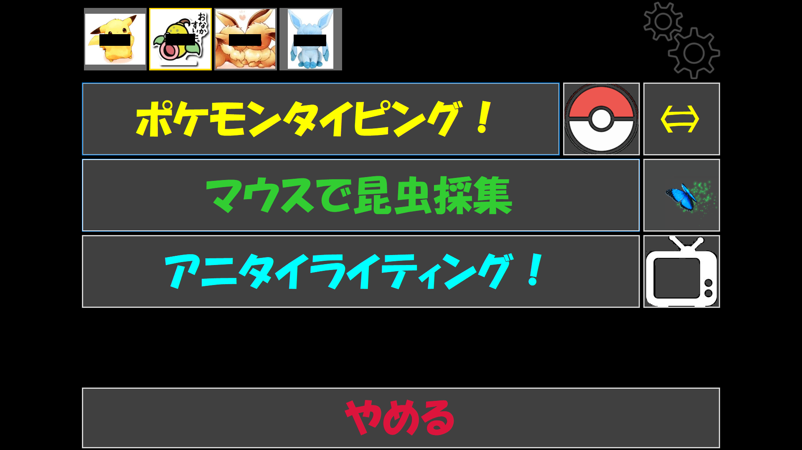
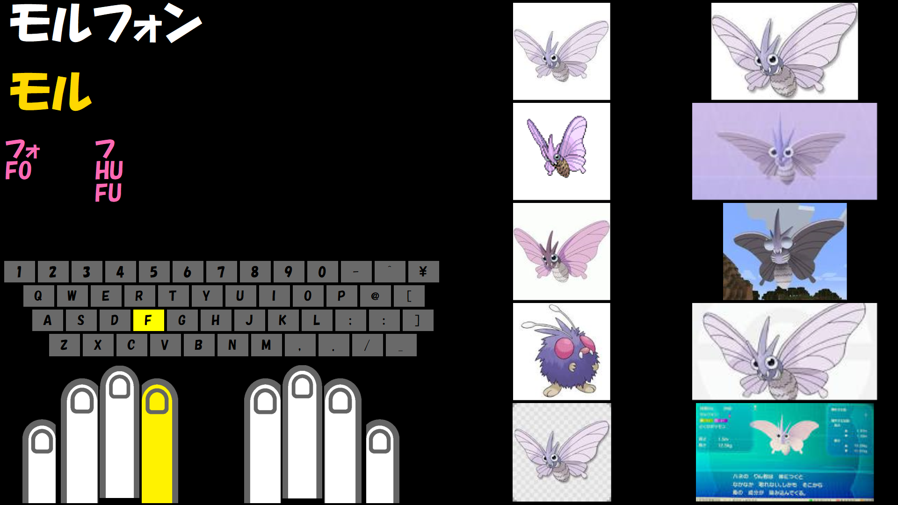
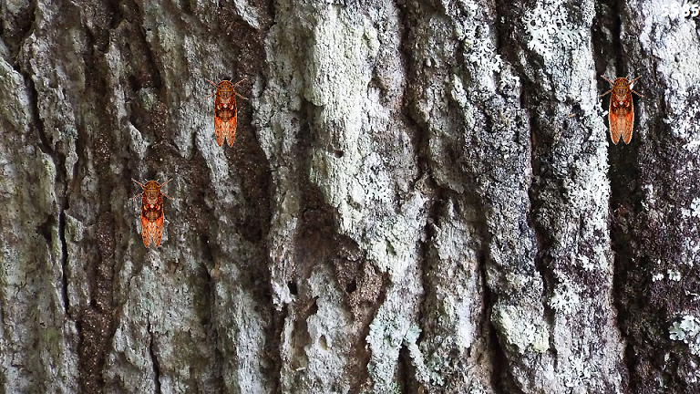
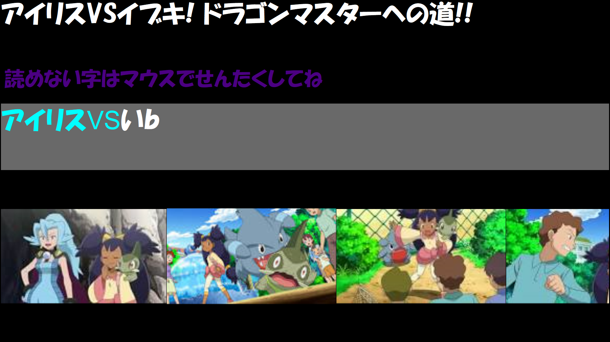

【PCUITraining】




Kaernitealの自作ゲームです。
主に小学生〜普段PCに触らない大人まで。PCの練習用ゲームとして作成しました。
Windows専用アプリケーションです。
【特徴】
ローカルにデータは殆ど持っていません。
版権にかかりそうなものは全て実行時にインタネーットから取ってくる仕様です。
※ だから問題無いとは言ってません！
【注意】
・Windows 10 以降のWindowsで動作します。
・インターネットが必須です。繋がらない環境では何もできません。
・.Net FrameWork 4.6.1 がインストールされている必要があります(おそらくWin10なら問題無いはず)。
【Download】
最新版 (2020/9/6 公開)
Ver 1.1.0
注）Chromeでダウンロードしようとするとブロックの確認が出ることがありますが、
そのまま実行していただいて問題ありません。
どなたか対処方法ご存知でしたら教えて頂けないでしょうか・・
【連絡先】
不具合や改善要望等ございましたら。下記のアドレス(@に変えてください)にご連絡ください。
連絡先：SkillSimulatorMHW アットマーク gmail.com
ただし対応を保障するものではありません。すみませんです。